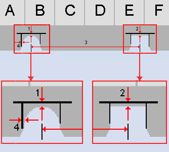

На этой вкладке вы можете начать тест качества, чтобы проверить, дают ли тесты, которые вы запускали, и настройки результат, которым вы удовлетворены. Выводится тестовая страница, которую вы можете использовать для проверки качества изображения. Кроме того, вы можете измерить и оптимизировать выравнивание изображения к ударам.
Для получения изображений и оценки качества теста см. Изображение теста качества и Оценка теста качества.
Это отображает название материала, на котором вы будете проводить тест качества. Материальное название было взято из вкладки «Материальный волшебник (3)».
Для измерения расстояний 1, 2 и 4, пожалуйста, используйте микроскоп со стократным увеличением.
Если изображение выровнено оптимально, половина линий для расстояний 1, 2 и 4 отрезана ударами, то есть линии все еще имеют толщину 50 мкм при ударе.
Выравнивание положения изображения к ударам сбрасывается к исходным значениям, если вы выбрали лентикулярную визуализацию. Визуализация тогда без выравнивания.
Положение изображения выравнивается к ударам снова, когда вы отбираете лентикулярную визуализацию.

Здесь вы вводите значение, измеренное для расстояния 1.
Расстояние 1: от края удара до верхнего края горизонтальной линии полукруглых ударов.
Здесь вы вводите значение, измеренное для расстояния 2.
Расстояние 2: от края удара до верхнего края горизонтальной линии квадратных ударов.
В этой коробке выберите удар, который встроен в ваше устройство.
Расстояние 3: Центральная линия полукруглого удара к центральной линии квадратного удара.
Здесь вы вводите значение, измеренное для расстояния 4.
Расстояние 4: Левый край удара к левому внешнему краю вертикальной линии полукруглых ударов.
Это отображает текущие значения после нажатия «Вычислить».
Нажатие на этот значок сбрасывает текущие значения до нуля.
Здесь вы выбираете, хотите ли вы запустить тест качества для материала с высоким разрешением (например, для визуализации с атласным экраном) или материала с более низким разрешением (для стандартных экранов).
|
|
|
|
Нажмите на эту кнопку, чтобы отменить тест качества. Тарелка транспортируется из устройства. |
Нажмите «Вычислить», чтобы рассчитать текущие значения для выравнивания положения изображения на основе измеренных значений и ввести их в «Вращение», «Быстрое сканирование» и «Медленное сканирование».
Нажмите «Применить», чтобы отправить текущие значения на устройство экспонирования и использовать их для следующих за ними заданий визуализации.
Нажмите «Близко», чтобы вернуться к «Материальный волшебник (1)».
Нажмите «Назад», чтобы вернуться к «Материальный волшебник (10)».
Copyright © 2016 Heidelberger Druckmaschinen AG